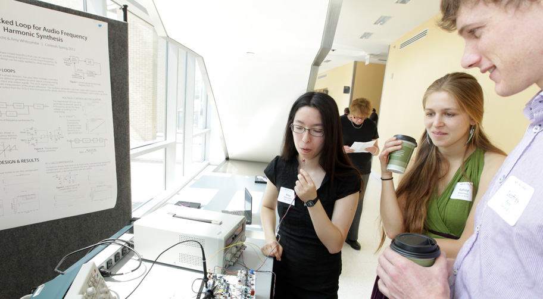

Expo Fall 2012
Olin's biannual student project showcase. With an added twist brought to you by Lifegraph Labs.
Welcome!
Welcome to Olin College Fall Expo! Expo is a beloved tradition at Olin: a great opportunity for students to show off their cool projects to visitors, faculty, and their classmates. Thanks for joining in the tradition, we hope you enjoy your day!
What's this site for?
We created this website to enable you to PUT THE PITCH FOR WHAT THE WEBSITE IS FOR HERE. alskdj laksj alkjf a sldkjfa lsk jkdj alskjd fiosjdl alskj djk a lskj dl ksalk fjdkslali jfskldja sk idl ksja dfkjalks jk.
Lifegraph + Olin College
Lifegraph is the name of the Facebook SCOPE team. The name is indicative of what we've been busy working on this semester: enabling everyday people to build apps to connect their physical and virtual interactions.
Stay Engaged Beyond Expo
The Lifegraph team will be working on seamlessly persisting real-life interactions online all year long. Follow our progress: follow us on Twitter and like us on Facebook